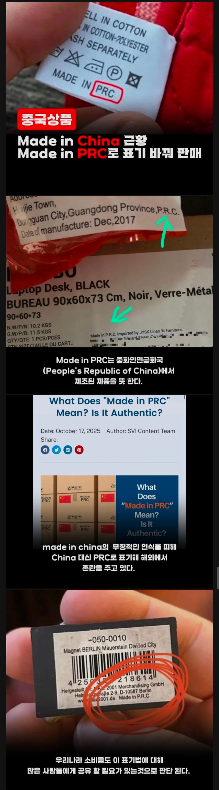

지들도 아는거지 메이드인 차이나의 가치를 ㅋㅋㅋㅋ

지들도 아는거지 메이드인 차이나의 가치를 ㅋㅋㅋㅋ
진짜 ㅈ같은 놈들이여.
지들이 뭔
쁘락치 약자 같네
쁘.락.치.ㅋㅋㅋㅋㅋㅋㅋㅋㅋㅋㅋㅋㅋㅋㅋㅋ


Pu Rak China

나도 이생각하고 내렸는뎈ㅋㅋㅋ
컴퓨터 보조기기는 이제 중국이 압도적이던데...
나도 아는데 저거 아는 사람 적을거 라고봄 ㅋㅋ
중국거가 가격대비 품질이 넘사인데 언제적 중국산 얘기하는거냐
나도 중국 안좋아해도 중국 직구는 애용한다
주문하는 족족 죄다 짝퉁이 오는데 중국 직구를 하고싶냐?ㅋㅋㅋ 몰려와서 물타기하는거 같아 역하네
어차피 짝퉁 쓸꺼 중국에서 직접 사면 싸다는거지~
넌 테무산에 품질을 기대하니? 가격대비 품질은 다이소를 못 넘어
제품 안정성 테스트도 안하고 만들어서 파는데
뭔 품질 타령임?
중국 현지인이 막 댓글 달고 그러는거 아니야
공구 함 써봐
드라이버 돌리면 나사가 아니라 드라이버 대가리가 돌아감 ㅋㅋㅋ
이제는 뭐 믿거 느낌보다는 알고도 쓰는 느낌 아닌가 샤오미 배터리 전후로 분위기가 많이 바뀜
아니 그 짱/새끼들의 품질을 인정한적은 한번도 없음. 그냥 대부분의 회사가 단가문제로 중국에서 제조하니 어쩔 수 없이 쓰는거지
알고도 어쩔 수 없이 쓴다고 하는게 맞겠다
한층 더 듣보잡 같아졌네
마데인 차이나: 익숙함 싼마이부터 고가 전자기기까지 다 있음
마데인 PRC: 뭔 아프리카 어디 박힌 훔바훔바 공화국인가 싶음
흠바흠바 공화국이 더 신뢰가네ㅋㅋ
다이소 애용하다보니 알리,테무 안쓴지 2년 넘은듯
다이소가 진짜 내 생활비 30프로는 감면해주는거같다
정상적인사고 : 메이드인 차이나 하면 품질 인정받게하겠다
바정상적 사고: 다른이름으로 박아서 모르게하자!
한국은 n기업에서 바슷한 짓을 하고있긴함
Nam?
PRC-999K
짱1깨가 뭣 같아도 짱1깨산 제품이 많은 건 팩트라 굳이 가릴 게 있었나 싶은데
본인들도 본인들이 이미지 ㅈ박은 건 아는 건가
People's Republic of China 중화인민공화국
풀어서 써도 ㅈ같네
국내 음식이 중국산이 늘어서 ㅈ같음
특히 빵 과자 같은거 살때 중국산 찾아서 거른다고 귀찮음
Made in DPRK
도 있음!

근데 요즘 중국산 아닌거 찾는게 더 힘들고
명품들도 중국에서 만드는 시국인데
해당제품이 국내 인증을 통과하고 유통 되는지 확인하는게 더 중요하다고 봄
바티칸 내부 선물가게가면 저거 prc임. 뭐 어디지 하고 검색하니까 메이드인 차이나 보여주기 싫어서 저렇게 했다네
내가 그래서 관광지가면 마그네틱 이런거 안삼ㅋㅋㅋㅋ 어딜가든 메이드인차이나야
요즘 중국은 저비용 저품질부터 고비용 고품질까지 다 갖춰놔서 메이커 브랜드가 더 중요한 느낌